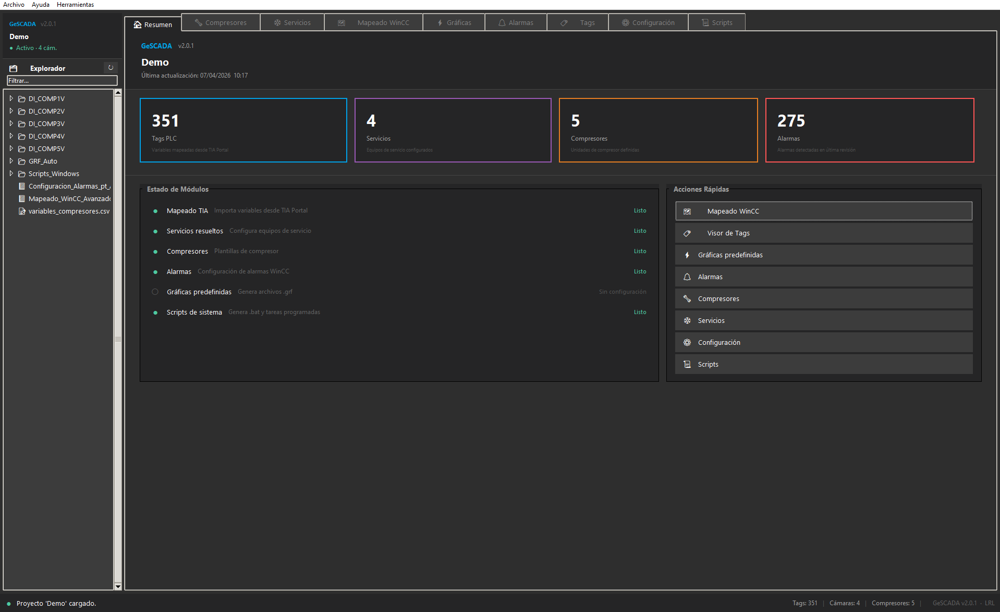
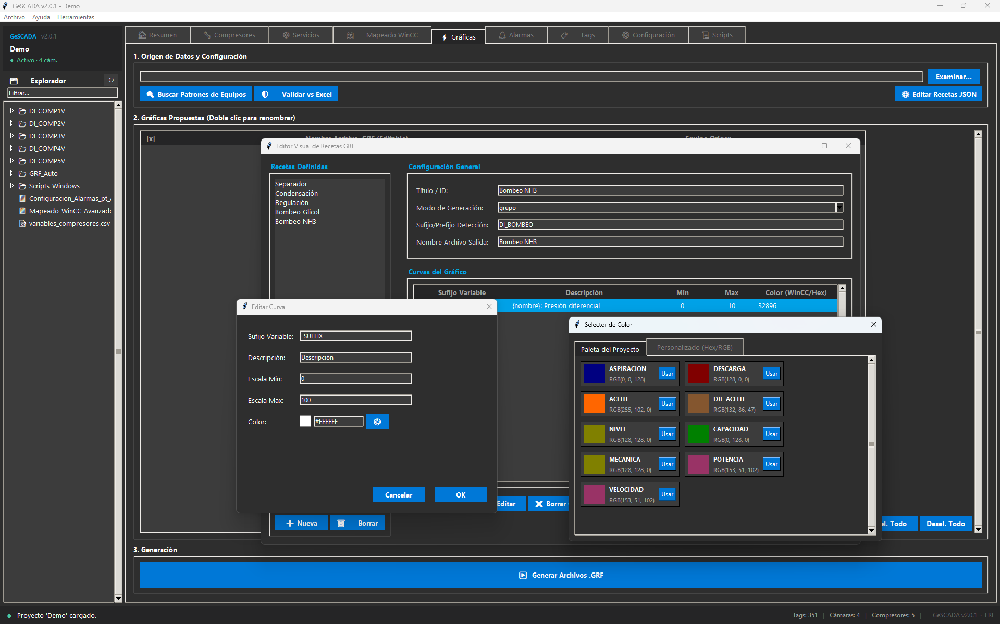
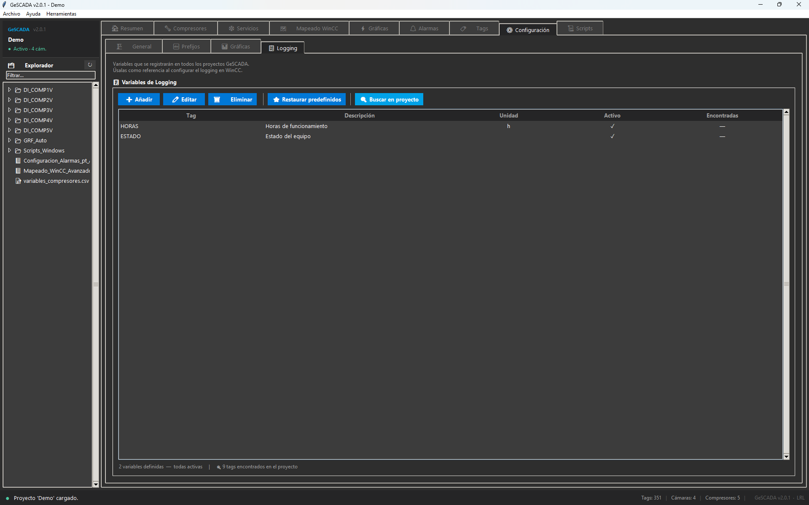
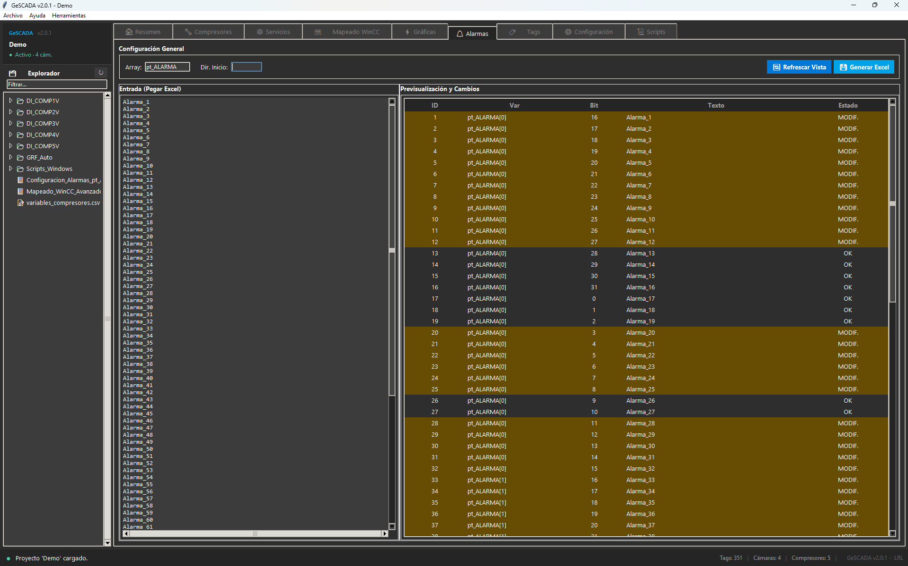

Empezó como hojas de cálculo
La necesidad de organizar tareas repetitivas fue el punto de partida para reunir herramientas de ingeniería en una aplicación de escritorio.
GeSCADA ayuda a los ingenieros de automatización a preparar, revisar y actualizar proyectos SCADA. Centraliza el mapeado de variables, facilita la revisión de cambios entre revisiones y genera recursos de ingeniería para comprobarlos antes de incorporarlos a WinCC.
Proyecto independiente de ingeniería industrial, centrado en tareas repetitivas del ciclo TIA Portal → WinCC.
Suite de escritorio para organizar el proyecto, consultar datos y acceder a herramientas de ingeniería y generación de recursos.

Resumen del proyecto — acceso a las principales tareas de ingeniería y consulta de su estado.
Parte del trabajo de ingeniería SCADA exige repetir procesos entre exportaciones, revisión de variables, configuración de equipos y preparación de recursos para WinCC.
La necesidad de organizar tareas repetitivas fue el punto de partida para reunir herramientas de ingeniería en una aplicación de escritorio.
Las herramientas permiten revisar los datos del proyecto y preparar distintos recursos desde una interfaz común.
Desde el mapeado inicial hasta la revisión de cambios y la generación de recursos para las siguientes etapas de ingeniería.
GeSCADA reúne las tareas clave del ciclo de ingeniería y ayuda a revisar los resultados sin sustituir el criterio del ingeniero ni la validación final en WinCC.
Importa y organiza los datos exportados desde TIA Portal para consultar variables, estructuras, instancias y fuentes PLC.
Facilita revisar diferencias entre revisiones y localizar elementos que necesitan atención antes de continuar.
Prepara mapeados, recursos gráficos, configuraciones y exportaciones que el equipo de ingeniería puede revisar antes de utilizarlos en el proyecto.
La línea 4.x amplía el flujo inicial con trabajo multi-PLC, sincronización de cambios y una biblioteca de plantillas compartida.
Organiza datos procedentes de varios PLC, manteniendo diferenciadas las fuentes y facilitando la revisión conjunta del proyecto.
Compara nuevas exportaciones con el estado previo para identificar altas, modificaciones y elementos retirados, con un alcance de revisión más claro.
Permite reutilizar y mantener plantillas de compresores, servicios y gráficas entre proyectos, con versiones que facilitan controlar su evolución.
Organiza los datos exportados desde TIA Portal y facilita la consulta de variables, estructuras e instancias para preparar el proyecto WinCC.
Consulta variables, estructuras, instancias y datos asociados desde una vista centralizada, con herramientas para filtrar y revisar la información del proyecto.
Generador especializado para compresores — los equipos con mayor densidad de variables. Valida la existencia de cada variable en tiempo real y genera en bloque la preconfiguración gráfica, las estructuras de variables para WinCC y sus variables base.
Detecta automáticamente los espacios refrigerados del proyecto — cámaras, salas, túneles — y genera por cada uno la preconfiguración gráfica con autoajuste de rango de temperatura y las estructuras de variables para WinCC.
Detecta automáticamente bombas, separadores, condensadores y otros equipos auxiliares en el mapeado. Genera en bloque la preconfiguración gráfica lista para WinCC — sin tocar un archivo a mano.


Prepara la configuración de alarmas y facilita comparar revisiones para identificar alarmas nuevas, modificadas o retiradas.
Permite revisar los cambios antes de actualizar la configuración del proyecto.

Prepara scripts auxiliares, tareas programadas y rutinas de apoyo para la operación y el mantenimiento del entorno Windows.
GeSCADA facilita organizar proyectos y conservar puntos de recuperación para ayudar a proteger el trabajo durante las operaciones de ingeniería.
Las herramientas de revisión ayudan a comprobar los datos y los cambios identificados antes de utilizar las salidas generadas.
El objetivo es reducir la manipulación repetitiva y facilitar la revisión de los recursos generados.
Reduce tareas repetitivas entre exportación, revisión y preparación de resultados para WinCC. El ingeniero se centra en lo que aporta valor.
El mapeado actúa como base común que refuerza la coherencia entre origen, validación y salida. Una sola fuente de verdad para todo el proyecto.
Ayuda a detectar errores antes de que lleguen a la fase final de configuración o importación, donde el coste de corrección es mayor.
Desde la preparación inicial hasta la revisión de cambios y la reutilización de configuraciones.
La línea 4.x consolida el flujo de ingeniería y amplía el trabajo multi-PLC, la sincronización incremental y la reutilización de plantillas.
Mapeado TIA, consulta y exportación de Tags, generación de recursos gráficos y de equipos, alarmas, idiomas y scripts auxiliares.
Trabajo con varias fuentes, revisión de diferencias entre exportaciones y actualización controlada del mapeado.
Plantillas versionadas para compresores, servicios y gráficas, orientadas a facilitar la reutilización entre proyectos.